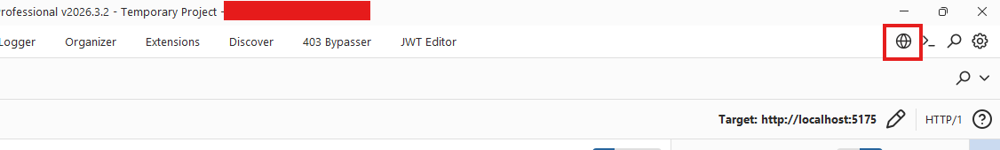

Mise en place du web proxy
Installer Burp et connecter votre navigateur
Installer Burp Suite Community
Téléchargez la version gratuite sur le site officiel de PortSwigger.
Lors de l'installation, gardez les options par défaut. Au lancement, choisissez Temporary project puis Use Burp defaults - c'est suffisant pour le CTF.
Télécharger Burp CommunityUtiliser le navigateur intégré de Burp
RecommandéBurp Suite embarque un navigateur Chromium déjà configuré pour utiliser le proxy. Pas besoin d'installer FoxyProxy ni de gérer les certificats : tout est prêt dès l'ouverture.
Tout le trafic du navigateur intégré passe automatiquement par Burp. Vous pouvez ainsi explorer le site cible et voir toutes les requêtes s'accumuler dans l'historique.

🦊
Alternative : configurer FoxyProxy dans votre navigateur
Installation de FoxyProxy et du certificat SSL Burp
Installation de FoxyProxy et du certificat SSL Burp
Installer FoxyProxy dans le navigateur
FoxyProxy est une extension de navigateur. Elle permet de dire au navigateur : « au lieu d'envoyer les requêtes directement au serveur, envoie-les d'abord à Burp ».
Installez-la depuis le store d'extensions de votre navigateur (Firefox Add-ons ou Chrome Web Store), puis configurez-la avec les valeurs ci-dessous. Une fois configurée, il suffit de cliquer sur l'icône FoxyProxy dans la barre d'outils et de sélectionner « Burp » pour activer le proxy.
| Nom / Description | Burp |
| Type | HTTP |
| Hostname | localhost |
| Port | 8080 |
| Username / Password | (optionnels) |

avec l'entrée « Burp » sélectionnable

montrant la configuration « Burp » : HTTP, localhost, 8080
Configurer le scope dans Burp Suite
Le scope (périmètre) indique à Burp quels domaines il doit intercepter.
💡 Petit rappel : HTTP vs HTTPS
Quand une URL commence par https://, le trafic est chiffré grâce à un certificat SSL. C'est ce qui fait apparaître le petit cadenas dans la barre d'adresse.
Le navigateur vérifie que le certificat est émis par une autorité de confiance (comme Let's Encrypt, DigiCert, etc.).
Quand le trafic passe par Burp, celui-ci remplace le certificat du site par le sien pour pouvoir lire le contenu.
Mais le navigateur ne connaît pas ce certificat Burp, donc il affiche une erreur de sécurité.
Notre site cible utilise http:// (sans le « s »), donc pas de problème de certificat pour lui.
Le souci, c'est que sans scope, les autres sites (Google, etc.) sont aussi interceptés et eux utilisent HTTPS.
Que se passe-t-il sans scope ?
Sans scope configuré, tout votre trafic passe par Burp - y compris Google, YouTube, vos mails, Discord, etc. Comme Burp remplace les certificats SSL de tous ces sites, votre navigateur va afficher des pages d'erreur sur chacun d'entre eux. Vous ne pourrez plus naviguer normalement tant que FoxyProxy est activé.
La solution : configurer le scope pour dire à Burp de ne s'occuper que du site cible. Tout le reste transitera normalement, sans passer par le proxy.
Erreurs que vous verrez sans scope
Votre connexion n'est pas sécurisée
Le propriétaire de www.google.com a mal configuré son site web. Firefox a détecté un problème avec le certificat du serveur.
SEC_ERROR_UNKNOWN_ISSUER
Votre connexion n'est pas privée
Des individus malveillants tentent peut-être de voler vos informations sur www.google.com.
NET::ERR_CERT_AUTHORITY_INVALID
Comment configurer le scope
http://ctf.asymis.fr:3001

avec la boîte « Add prefix for in-scope URLs »

(boutons Yes / No)
▸ Reconstitution interactive du dialog
You have added an item to Target scope. Do you want Burp Proxy to stop sending out-of-scope items to the history or other Burp tools?
Answering "yes" will avoid accumulating project data for out-of-scope items.
Résultat : seul le trafic vers cible passera dans Burp. Vous pouvez naviguer normalement sur les autres sites sans erreur de certificat. Répondre Yes évite aussi d'accumuler des données hors-scope dans l'historique.
Installer le certificat SSL de Burp (optionnel)
Si vous voulez aussi intercepter les sites HTTPS sans erreur de certificat , vous pouvez installer le certificat de Burp dans votre navigateur. Ce n'est pas nécessaire pour ce CTF (la cible utilise HTTP), mais c'est une bonne pratique à connaître.
Télécharger le certificat
http://burpsuite (ou http://127.0.0.1:8080)
cacert.der
🦊 Installation sur Firefox
cacert.der téléchargé
🌐 Installation sur Chrome
cacert.der (changez le filtre de fichiers en « Tous les fichiers » si vous ne le voyez pas)
cacert.der et installez-le dans le magasin « Autorités de certification racines de confiance ».
Résultat : une fois le certificat installé, Burp pourra intercepter le trafic HTTPS sans déclencher d'erreur dans le navigateur. Les sites HTTPS afficheront le cadenas normalement, même si le trafic passe par Burp. Pensez à retirer ce certificat après le CTF si vous ne comptez plus utiliser Burp.
Désactiver l'intercepteur
Par défaut, Burp bloque chaque requête et attend que vous cliquiez sur « Forward » pour la laisser passer. C'est utile quand on veut modifier une requête précise, mais en mode exploration, c'est très pénible : chaque clic sur le site vous oblige à revenir dans Burp pour cliquer « Forward ».
En désactivant l'intercepteur (Intercept off), les requêtes passent automatiquement et sont quand même enregistrées dans l'historique. Vous pourrez toujours les consulter et les rejouer plus tard via l'onglet Repeater.

avec le bouton « Intercept off »